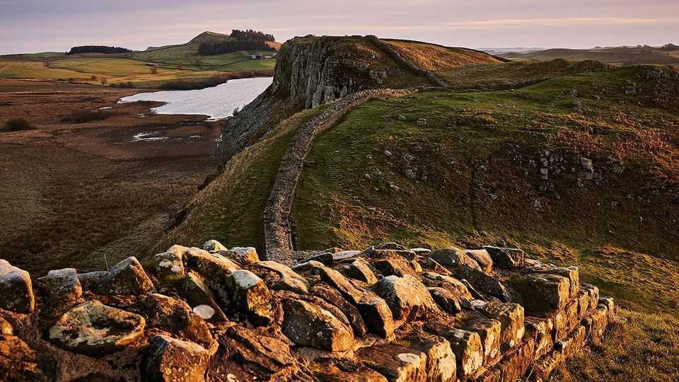

Border walls are symbols of power—and monuments to delusion
A summer stroll along Hadrian’s Wall is also a rendezvous with history

Jul 30th 2026
To Caledonian tribesmen, it must have looked awesome. At Winshields Crags, the highest point of Hadrian’s Wall, the fortification runs toweringly atop a steep escarpment. For the legionaries who built it in the second century AD, hauling up the rocks would have been backbreaking. Today walkers carrying only water bottles can find themselves out of puff. “These Romans”, one pants, “must have been mad.”
For almost 300 years Hadrian’s Wall was guarded by Syrian archers, Thracian cavalrymen and other forces dispatched by Rome to this northerly imperial redoubt. Tread this picturesque stretch of northern England now, and you instead encounter history-hungry Americans, well-equipped Scandinavians and parents trying to stop their offspring eating the snacks too soon. The wall is an impressive monument—but, visitors may wonder, as they might at many ancient ruins, a monument to what?
To power, runs one answer. Let there be a wall, the emperor Hadrian decreed in 122ad, and in fairly short order—at least compared with recent border-wall projects—there was. His ran 117km across the Roman province of Britannia at its narrowest point. Today, in the ruins of its watchtowers, castles and forts, you try to imagine yourself as a Roman soldier facing barbarians, harsh military discipline, the biting westerly wind and frigid winters. The lucky ones were sent warm socks and underwear from home.
Up on the crags, you run into one of the big problems with history, especially the remote kind for which records are patchy. So much of it seems to be about violence, and most of it is about men: where they stood guard, which weapons they wielded, the safekeeping of their regimental standards and wages, and maybe where, after they were paid, they went boozing, bathing and whoring. You go in search of a human past and stub your toe on the lifeless rubble of a turret.
Perhaps this is why one of the popular stops on the wall is for something that isn’t Roman—something, in fact, which is no longer there at all. In 2023 two numskulls sawed down a tree in a dip between hillocks, in a spot called Sycamore Gap. The culprits became more infamous than most murderers; the tree became better known than ever. “It’s so sad,” laments a walker approaching the treeless gap. The martyred sycamore is somehow more vivid and poignant than the traceless soldiers.
That is, until you head south from the gap, across moorland studded with wildflowers and sheep dung. In the museum at Vindolanda, site of a Roman fort and adjacent civilian village, are toddler’s shoes and a toy sword. A man etched his name on an amphora to stop comrades swiping his olives, like a flat-sharer labelling his milk. Broken pieces of an ornate glass vessel were unearthed far apart; a guide speculates that a slave girl smashed it accidentally and scattered the proof. On a writing tablet, like a Roman postcard, a commander’s wife invited a friend to her birthday party.
So it wasn’t all sentry duty and repelling enemy hordes. Indeed there may not have been all that much repelling to do. Compared with other Roman regions, says Greg Woolf of New York University, this “wasn’t a very dangerous place”. The tribes beyond the battlements were too sparse to pose a consistent threat. And the wall was not an immutable border. Roman forces pushed deeper into modern Scotland before and after its construction; Hadrian’s successor built another, less famous wall farther north.
What seemed a statement of imperial might could instead be seen, says Professor Woolf, as “a monument to Hadrian’s ego”. Eventually, as the empire crumpled in the early fifth century, the orders and wages dried up. So must have the care packages of socks. The last detachments wound up defending only themselves.
Such disintegration is the long-run fate of empires, and of grandiose walls. You build one to demonstrate your tyrannical clout—over rugged terrain, your enemies or your own people—and with time it becomes a symbol of delusion. Rather than keeping invaders or immigrants out (or dissidents in), the barrier is scavenged for materials, as were bits of the Great Wall of China, or becomes a tourist attraction, like the Berlin Wall.
Or Hadrian’s, which developed into a cherished landmark and route of a bracing trail. A Belgian hiker cites two strategic advantages of the old empire’s northern periphery: it is cooler than the broiling continent and you get fish and chips for dinner. Once patrolled by men sent far from their relatives, today the wall is a beautiful place to commune with yours.■